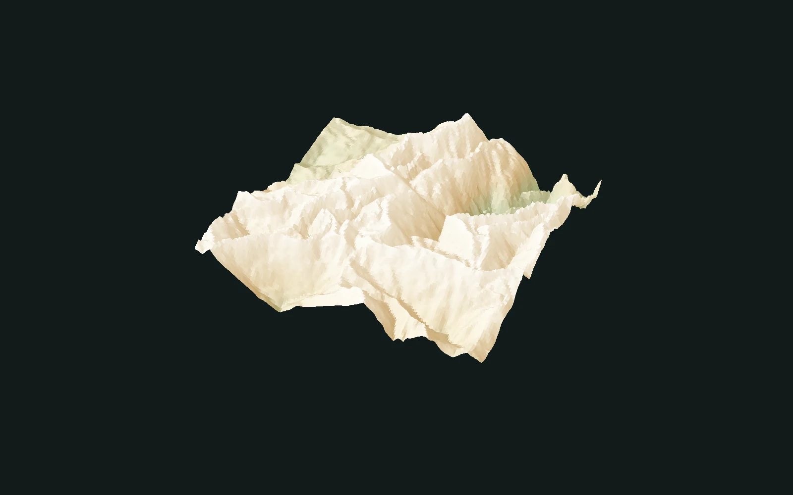

Node reference · v2
Fold · Node reference
Fold height through sine, triangle and sawtooth profiles. Repetition and symmetry can turn the same starting terrain into very different shapes.
- Documentation edition
- 2026-10-19
- Operation version
- 2
This page documents this exact operation version. Documentation edition and backend implementation versions are separate.
Inputs and outputs
Inputs
- heightfield required
Required terrain heightfield.
- folds optional
Optional per-sample frequency modulation. Its grid resolution must match the terrain; it is not an output opacity mask.
Outputs
- heightfield_0
Height values remapped through the selected waveform.
Parameters
Contract fields come from a dated Catalog snapshot. Soft slider endpoints do not define hard validation limits. Numeric defaults use a readable display precision; exact typed values remain in the downloadable contract.
Waveform
WaveformSelect Sine, Triangle or Sawtooth. The result study compares all three using the same terrain and display treatment.
- Type
- Choice
- Default
Sine- Accepted values
- Sine / Triangle / Sawtooth
Folds
FoldsControls waveform frequency across the height range. The optional second input modulates this frequency per sample.
- Type
- Number
- Default
2- Range endpoints
- 0 (soft) → 10 (soft)
Symmetric
SymmetricOffsets the waveform input around the height midpoint before folding. It changes the profile alignment rather than blending the result.
- Type
- Boolean
- Default
On
Examples and verification
This reference explains the current contract; its linked evidence qualifies only the stated backend and cases.

- Three waveforms, symmetry and the optional frequency-modulation input are retained.
- 108 full-Graph cases cover 64² and 128²; observed raw f32 difference is zero in this recorded matrix.
- 1024² images are effect examples. This record qualifies the CPU slice, not GPU or engine delivery.
Stable help topic
node.fold · v27e86e9c2224ef4c910fd670e9091dcc02c6fd435ae54274cdb75a2de315c6cf4